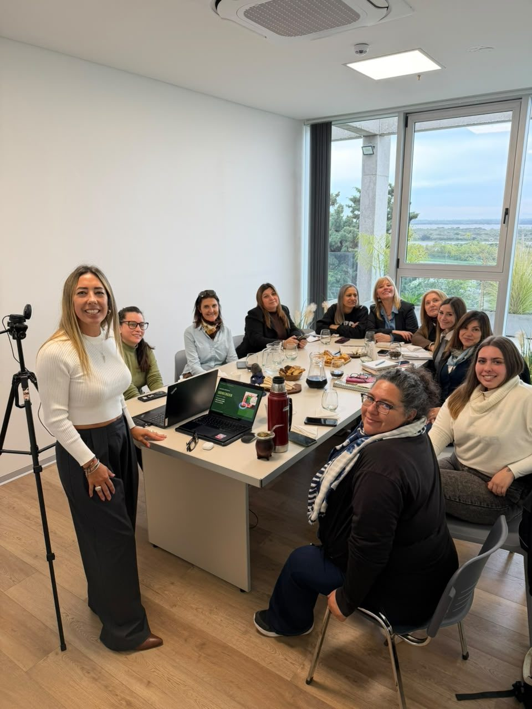
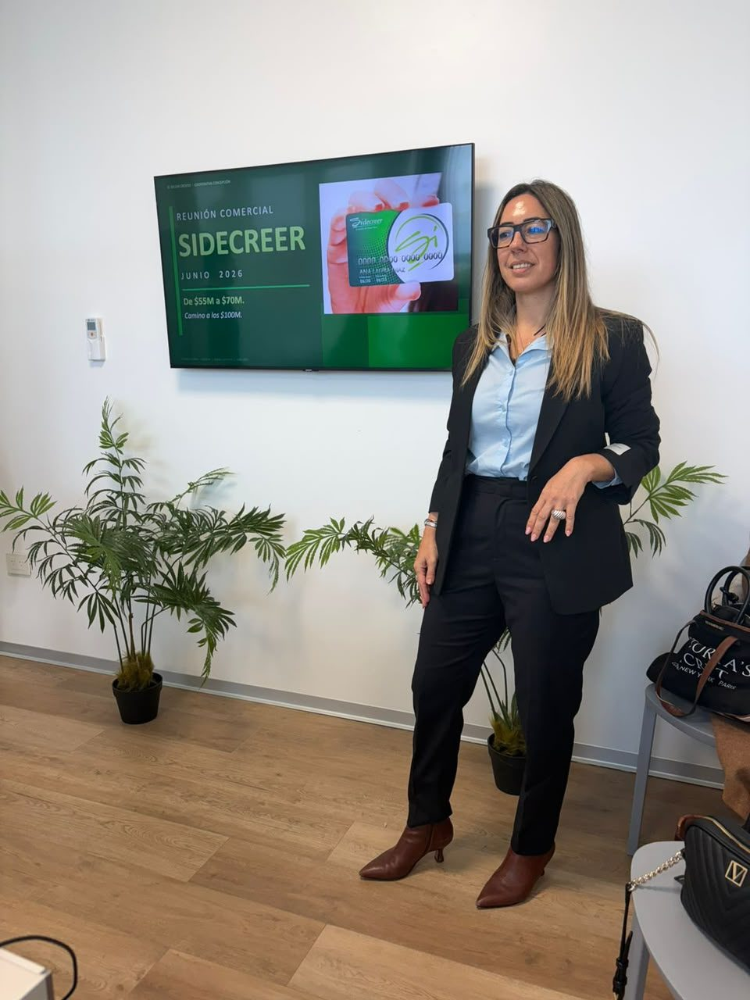
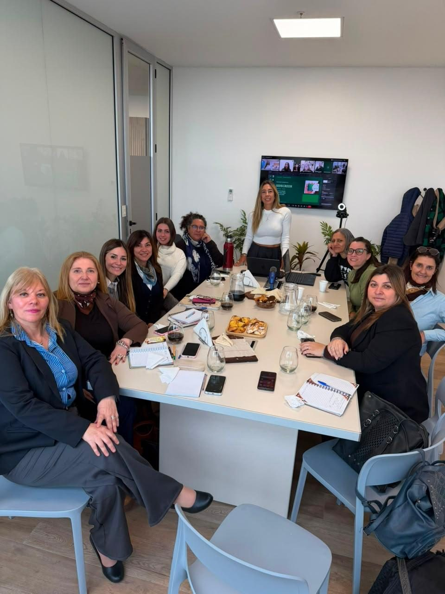

Consultá tu disponible
Contactanos y verificamos cuál es tu disponibilidad actual.
Para los que
hacen Entre Ríos
Préstamos para empleados públicos, municipales y jubilados de Entre Ríos.
Rápido. Seguro. Sin complicaciones.

Tu préstamo se acredita en minutos
Nuestra trayectoria
En Mejor Crédito, junto a Cooperativa Concepción, llevamos más de 30 años acercando soluciones financieras simples, claras y confiables.
Conocemos a nuestros clientes y entendemos que, cuando necesitás una solución, necesitás también una respuesta ágil, información clara y la tranquilidad de estar acompañado durante todo el proceso.
Por eso desarrollamos una propuesta pensada especialmente para empleados públicos, jubilados y pensionados de la provincia de Entre Ríos, combinando atención personalizada, procesos simples y una trayectoria que nos respalda.
Más de tres décadas construyendo confianza.
Experiencia y respaldo.
Te acompañamos durante todo el proceso.
Una propuesta pensada para los entrerrianos.
Obtener tu adelanto es simple.
Contactanos y verificamos cuál es tu disponibilidad actual.
Te mostramos el monto disponible y las alternativas de cuotas para que puedas elegir la que mejor se adapte a vos.
Validamos la documentación necesaria y avanzamos con la operación.
Una vez aprobada la operación, se procesa la acreditación.

Podés consultar tu disponible y conocer cuánto podés solicitar hoy.
Nuestro equipo verifica tu disponibilidad, te informa las alternativas de cuotas y te acompaña durante todo el proceso.
Consultá ahora por WhatsAppTambién podemos orientarte sobre las alternativas disponibles para iniciar tu solicitud.
Sabés desde el comienzo cuánto vas a pagar.
Menos pasos y acompañamiento en cada etapa.
Podés iniciar tu consulta desde donde estés.
Buscamos que el proceso sea ágil y sencillo.
No cobramos cuota social por la gestión.
Si necesitás ayuda, tenés una persona para acompañarte.

Un equipo para acompañarteSabemos que detrás de cada solicitud hay una necesidad, un proyecto o algo que necesitás resolver. Por eso queremos que puedas conocer tus opciones de manera rápida, simple y con el respaldo de un equipo que te acompañe.
Tu próximo paso puede empezar hoy.
Quiero saber cuánto tengo disponible